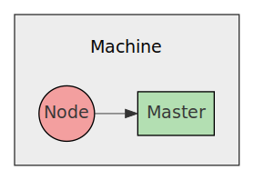
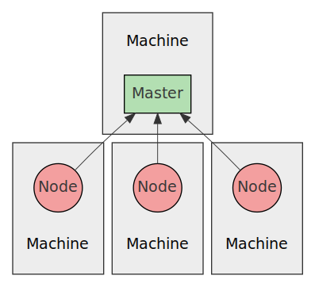
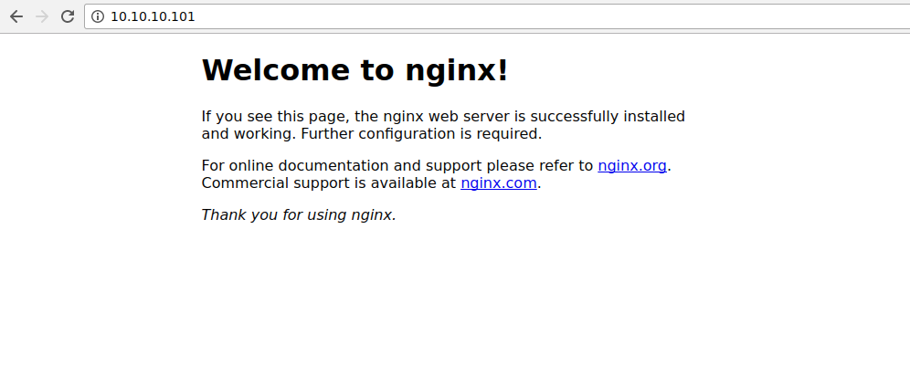

- Published
- 2017-07-21
- NixOS release
- 17.03
This article will show you how to setup Kubernetes on your local NixOS machine and perform some common tasks such as starting containers and routing traffic to your running containers.
This article assumes you know basic Kubernetes terminology and will focus more on showing you "this is how you do it" and less on "this is how it works". For me, it was easier to understand the details of Kubernetes after I had configured and experimented with it a bit.
In this article we will setup both a master and a node on the same machine
for simplicity.

After reading this article you should know enough to setup a Kubernetes cluster on multiple machines on your local network.

Installation
First of all, there isn't a single master and node systemd service. There
are a few separate systemd services that together make up the functionality of
master and node. The nice people of NixOS has decided to make our lives
easier by allowing us to just add:
services.kubernetes = {
roles = ["master" "node"];
};
To our configuration.nix and all the underlying systemd services will be
enabled and configured with sane defaults for us. After we have run
nixos-rebuild switch all services should have been started and we should have
the kubectl command available in our shell.
To verify this, we can run the following command:
kubectl cluster-info
We should see something like this:
Kubernetes master is running at http://localhost:8080 To further debug and diagnose cluster problems, use 'kubectl cluster-info dump'.
After that we are ready to start running stuff on our cluster!
NB: if you have used minikube on your machine, it may have written
configuration files to $HOME/.kube that will interfere with your NixOS setup.
For example, it could have configured kubectl to use the the IP of the
Virtualbox VM that minikube created, instead of 127.0.0.1.
Starting a deployment
The first thing we will do is run a single nginx deployment run on 2
containers on the cluster.
We will do this by creating a Deployment with 2 replicas
(how many containers to start) and the port 80 exposed. Kubernetes will then
take care of spinning up the containers and making sure they are always running,
by restarting them if they fail.
You can either create a Deployment by running kubectl with a bunch of command
line arguments or you can create a declarative file with all the options. Guess
which approach we will use?
YAML is used in the declarative files for Kubernetes objects, but JSON is
also accepted. The file for our Deployment will look like this:
nginx-deployment.yaml
apiVersion: extensions/v1beta1 kind: Deployment metadata: name: nginx-deployment spec: replicas: 2 template: metadata: labels: app: nginx spec: containers: - name: nginx image: nginx:1.7.9 ports: - containerPort: 80
This tells Kubernetes to start 2 containers from the given template that says:
- Use Docker image
nginx:1.7.9- Expose port
80- Add label
app: nginx
After we saved the file we can create the Deployment object using kubectl:
kubectl create -f ./nginx-deployment.yaml
After running that command we can check that the Deployment has been created
by running:
kubectl get deployments
Which will show you something like this:
NAME DESIRED CURRENT UP-TO-DATE AVAILABLE AGE nginx-deployment 2 2 2 2 10s
Show information
We can show the details of this deployment by running:
kubectl describe deployments
Which will show you something like this:
Name: nginx-deployment
Namespace: default
CreationTimestamp: Fri, 21 Jul 2017 14:07:42 +0200
Labels: app=nginx
Selector: app=nginx
Replicas: 2 updated | 2 total | 2 available | 0 unavailable
StrategyType: RollingUpdate
MinReadySeconds: 0
RollingUpdateStrategy: 1 max unavailable, 1 max surge
Conditions:
Type Status Reason
---- ------ ------
Available True MinimumReplicasAvailable
OldReplicaSets: <none>
NewReplicaSet: nginx-deployment-4087004473 (2/2 replicas created)
Events:
FirstSeen LastSeen Count From SubObjectPath Type Reason Message
--------- -------- ----- ---- ------------- -------- ------ -------
10s 10s 2 {deployment-controller } Normal ScalingReplicaSet Scaled up replica set nginx-deployment-4087004473 to 2
To show the started pods we can run:
kubectl get pods
Which will show you something like this:
NAME READY STATUS RESTARTS AGE nginx-deployment-4087004473-ncskn 1/1 Running 0 25s nginx-deployment-4087004473-w6hsk 1/1 Running 0 25s
We can also show more details of the pod:
kubectl describe pods
Which will show details for each pod, note however that only one pod is shown here to avoid a wall of text:
Name: nginx-deployment-4087004473-ncskn
Namespace: kube-system
Node: **********
Start Time: Fri, 21 Jul 2017 14:07:42 +0200
Labels: app=nginx
pod-template-hash=4087004473
Status: Running
IP: 10.10.0.11
Controllers: ReplicaSet/nginx-deployment-4087004473
Containers:
nginx:
Container ID: docker://a7afa58846d9925656058990cb555b6c958725db53636f6a27cda8dd62cf4c72
Image: nginx:1.7.9
Image ID: docker-pullable://nginx@sha256:e3456c851a152494c3e4ff5fcc26f240206abac0c9d794affb40e0714846c451
Port: 80/TCP
State: Running
Started: Fri, 21 Jul 2017 14:10:27 +0200
Last State: Terminated
Reason: Completed
Exit Code: 0
Started: Fri, 21 Jul 2017 14:07:42 +0200
Finished: Fri, 21 Jul 2017 14:10:26 +0200
Ready: True
Restart Count: 1
Volume Mounts:
/var/run/secrets/kubernetes.io/serviceaccount from default-token-n47xq (ro)
Environment Variables: <none>
Conditions:
Type Status
Initialized True
Ready True
PodScheduled True
Volumes:
default-token-n47xq:
Type: Secret (a volume populated by a Secret)
SecretName: default-token-n47xq
QoS Class: BestEffort
Tolerations: <none>
Events:
FirstSeen LastSeen Count From SubObjectPath Type Reason Message
--------- -------- ----- ---- ------------- -------- ------ -------
25m 25m 1 {default-scheduler } Normal Scheduled Successfully assigned nginx-deployment-4087004473-ncskn to workstation
25m 25m 1 {kubelet workstation} spec.containers{nginx} Normal Created Created container with docker id 15c7bbae047a; Security:[seccomp=unconfined]
25m 25m 1 {kubelet workstation} spec.containers{nginx} Normal Started Started container with docker id 15c7bbae047a
25m 22m 2 {kubelet workstation} spec.containers{nginx} Normal Pulled Container image "nginx:1.7.9" already present on machine
22m 22m 1 {kubelet workstation} spec.containers{nginx} Normal Created Created container with docker id a7afa58846d9; Security:[seccomp=unconfined]
22m 22m 1 {kubelet workstation} spec.containers{nginx} Normal Started Started container with docker id a7afa58846d9
As we can see we have a single pod running that has started a single Docker
container. We can verify this by running docker ps:
CONTAINER ID IMAGE COMMAND CREATED STATUS PORTS NAMES b4992e43b858 nginx:1.7.9 "nginx -g 'daemon ..." 28 seconds ago Up 28 seconds k8s_nginx.9c713255_nginx-deployment-4087004473-342pq_kube-system_5ce8d790-5bfe-11e7-9006-08002727d39f_32a8edcb 9343f3656c90 nginx:1.7.9 "nginx -g 'daemon ..." 28 seconds ago Up 28 seconds k8s_nginx.9c713255_nginx-deployment-4087004473-342pq_kube-system_5ce8d790-5bfe-11e7-9006-08002727d39f_32a8edcb
Deployment takes care of starting new containers if they die, let's put that
to the test:
docker kill b4992e43b858
Then we run docker ps again to check if there is a new container started:
CONTAINER ID IMAGE COMMAND CREATED STATUS PORTS NAMES 5ea5c41723c6 nginx:1.7.9 "nginx -g 'daemon ..." 17 seconds ago Up 16 seconds k8s_nginx.9c713255_nginx-deployment-4087004473-342pq_kube-system_5ce8d790-5bfe-11e7-9006-08002727d39f_5ece527a 9343f3656c90 nginx:1.7.9 "nginx -g 'daemon ..." 28 seconds ago Up 28 seconds k8s_nginx.9c713255_nginx-deployment-4087004473-342pq_kube-system_5ce8d790-5bfe-11e7-9006-08002727d39f_32a8edcb
Lo and behold, a new container was started automatically!
Accessing nginx
Next step is to access nginx to make sure it is running and working as expected. A newly started nginx should show you the default start page for all requests.
Lets find out what our pod is called:
kubectl get pods
You should see something like this:
NAME READY STATUS RESTARTS AGE nginx-deployment-4087004473-342pq 1/1 Running 1 7m nginx-deployment-4087004473-w6hsk 1/1 Running 0 25s
Then lets find out what IP the pod have so that we can connect to it using our web browser:
kubectl describe pods nginx-deployment-4087004473-342pq | grep IP
You should see something like this:
IP: 10.10.0.11
Let's open that address in our web browser:

It works!
Changing a deployment
Let's change our deployment to have 3 containers that runs nginx so that we can
load balance connections between those 3 containers. We change the value
replicas to 3 in our configuration file:
nginx-deployment.yaml
apiVersion: extensions/v1beta1 kind: Deployment metadata: name: nginx-deployment spec: replicas: 3 template: metadata: labels: app: nginx spec: containers: - name: nginx image: nginx:1.7.9 ports: - containerPort: 80
Instead of using the create command, we instead use apply to change an
already existing Deployment:
kubectl apply -f ./nginx-deployment.yaml
After running apply we can make sure there are 3 pods:
kubectl get pods
You should see:
NAME READY STATUS RESTARTS AGE nginx-deployment-4087004473-342pq 1/1 Running 1 39m nginx-deployment-4087004473-w6hsk 1/1 Running 0 39m nginx-deployment-4087004473-nwssb 1/1 Running 0 10s
Now that we have 3 pods we will also have 3 IPs:
$ kubectl describe pods | grep IP IP: 10.10.0.11 IP: 10.10.0.12 IP: 10.10.0.13
To allow outside communication that is load balanced between the 3 pods
we need to define a Service. A Service creates a single endpoint that
you can connect to that is load balanced across multiple pods.
nginx-service.yaml
apiVersion: v1 kind: Service metadata: name: my-nginx labels: run: my-nginx spec: ports: - port: 80 protocol: TCP selector: app: nginx
Notice the selector attribute. That's the attribute that is used to connect
a service with pods under a Deployment.
After creating the service:
kubectl create -f ./nginx-service.yaml
We can check that it exists:
$ kubectl get services NAME CLUSTER-IP EXTERNAL-IP PORT(S) AGE my-nginx 10.10.10.101 <none> 80/TCP 1m
If we then try out the service by opening its IP in our web browser:

We see that it works.
We can delete the service by using the same configuration file:
kubectl delete -f ./nginx-service.yaml
Now we will not be able to access the service using IP 10.10.10.101 any longer.
The end
That's the gist of setting up Kubernetes on NixOS for experimentation.